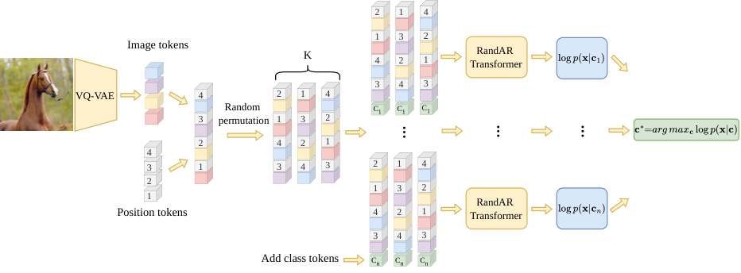

Revisiting Autoregressive Models for Generative Image Classification
A fixed token order limits autoregressive image classifiers. Averaging log-likelihood scores across token orders improves classification, with up to 25× faster inference than the evaluated DiT classifiers.
My contribution
I hypothesized that combining log-likelihood scores across token orders would improve classification and developed order-averaged scoring with RandAR. I also identified the objective’s equivalence in expectation to a masked-diffusion evidence lower bound.